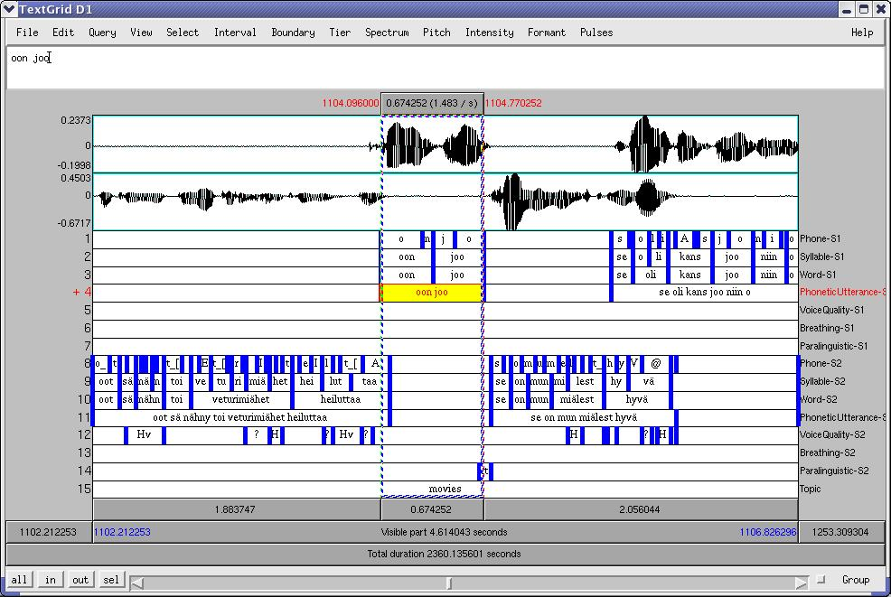

Aliluvut
1.4 Annotointityökalut
Puheen annotointiin on olemassa monia työkaluja, joilla on erilaisia
ominaisuuksia. Tämä ohjeistus soveltuu parhaiten annotointiin Puh-editori-nimisellä
ohjelmalla. Annotaatiota voi kuitenkin tehdä myös muilla ohjelmilla,
kunhan pitää mielessään tässä dokumentissa annetut ohjeet (ks. esim
kuva 1.1). Tällöin annotaatiotiedostot
voidaan automaattisesti muuntaa puhetietokantajärjestelmään sopiviksi.
Kuva 1.1:
Esimerkki dialogin annotaatiosta
Praat-ohjelmalla. Puhujien S1 ja S2 puheeseen liittyvät annotaatioyksiköt
on merkitty eri kerroksiin. Topic-kerroksessa on vapaamuotoinen englanninkielinen
kuvaus puheenaiheesta: tässä on menossa keskustelu vanhoista elokuvista.
|

|
1.4.1 Annotointi Puh-editorilla
Puh-editori ohjaa käyttäjää noudattamaan ohjeita ja määrittelemään
käyttämänsä annotaatioyksiköt tarkasti. Puh-editorissa voidaan annotoida
lukuisia annotaatiokerroksia samanaikaisesti. Puh-editoria käyttämällä
kaikki annotaatiot ovat suoraan yhteensopivia liitettäväksi puhetietokantaan,
ja niitä voidaan myös helposti jakaa muiden tutkijoiden kanssa. Puh-editori
voidaan asentaa tietokoneisiin, joissa on Windows- tai
Linux-käyttöjärjestelmä. Editorin voi ladata ilmaiseksi omalle koneelleen
www-osoitteesta
http://www.csc.fi/kielipankki/puhe/index.phtml
Samassa paikassa on myös ohjelman käyttöopas.
1.4.2 Annotointi Praat-ohjelmalla
Jos käytät annotointiin Praat-ohjelmaa (5), kaikki
tekemäsi annotaatiokerrokset (Tier) ovat fyysisesti täysin erillisiä.
Eri kerroksissa olevien yksiköiden välisiä suhteita voi kuitenkin
kuvata niiden mahdollisen ajallisen päällekkäisyyden avulla. Tätä
tietoa voi Praatin sisällä hyödyntää vain skripteissä.
Praat-ohjelmalla tehdyt annotaatiotiedostot (TextGrid) on mahdollista
muuntaa puhetietokannan käyttämään muotoon. Osoitteessa
http://www.csc.fi/kielipankki/puhe/index.phtml
on linkki ohjattuun konvertointi- ja julkaisutyökaluun (Publish
TextGrid Web Wizard), joka muuntaa Kielipankin puheaineistoista tehdyt
annotaatiotiedostot Puh-editorin ymmärtämään muotoon ja julkaisee
annotaatiokerrokset. Tämä mahdollisuus kannattaa huomioida jo Praatilla
annotoitaessa.
- Varmista, että sellaisilla eri kerroksissa olevilla annotaatioyksiköillä,
joilla on keskenään esimerkiksi osa-kokonaisuussuhde, on täsmälleen
päällekkäiset alku- ja loppurajat. Esim. jos annotoit Praatilla sanakerroksen
ja tavukerroksen, varmista, että sanan alkuraja on täsmälleen samalla
kohdalla kuin sanan ensimmäisen tavun alkuraja, ja että sanan loppuraja
on täsmälleen samassa kohdassa kuin sanan viimeisen tavun loppuraja
(ks. esimerkkejä sanakerroksesta kuvassa 1.1).
Tietyssä kerroksessa oleva rajaviiva voidaan kohdistaa toisessa kerroksessa
olevan rajan kanssa ''tarttumalla'' rajaan hiirellä, vetämällä se
toisessa kerroksessa olevan rajan päälle ja vapauttamalla sitten hiiren
painike. Kohdistettujen rajojen perusteella voidaan haku- ja analyysivaiheessa
yhdistää tavuyksiköt vastaaviin sanayksiköihin.
- Jos jonkin annotaatiokerroksen
A yksiköille pitää määrittää lisäpiirteitä tai
-ominaisuuksia
niin, että kutakin segmenttiä tms. yksikköä vastaa aina maksimissaan
yksi toisen tason B yksikkö tai piirre, pidä huolta, että kerros A
on tyyppiä IntervalTier ja kerros B tyyppiä PointTier. Merkitse kerrokseen
B piste tai ankkuri (point) silmämääräisesti suunnilleen A-kerroksen
vastaavan yksikön puoliväliin. Anna tarvittaessa B-tason pisteille
nimet, jotka kuvaavat piirteen arvoja tai sisältöjä.
Tässä tapauksessa PointTieriä kannattaa käyttää, koska segmenttirajoja
joutuu merkitsemään vähemmän, eikä B-tason rajojen kohtia yleensä
tarvitse korjata, vaikka A-tason segmenttien rajat hieman muuttuisivatkin.
PointTierin sisältämät piirrearvot on Puh-editorissa helppo muuntaa
A-tasolle merkittyjen yksiköiden piirteiksi.
: II. Annotaatioyksiköt
: 1. Mitä on annotaatio?
: 1.3 Aineiston luomat rajoitukset
Sisältö
Hakemisto
Mietta Lennes
2005-05-11